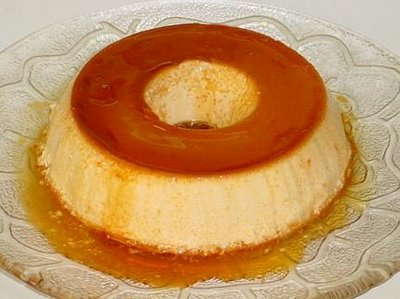

Receita - Pudim

Pudim
Ingredientes
Pudim
- 1 lata de leite condensado
- 1 lata de leite (medida da lata de leite condensado)
- 3 ovos inteiros
Calda
- 1 xícara (chá) de açúcar
- 1 lata de leite (medida da lata de leite condensado)
- 2 xícaras de água
Modo de Preparo
Pudim
- Primeiro, bata bem os ovos no liquidificador
- Acrescente o leite condensado e o leite, e bata novamente
Calda
- Derreta o açúcar na panela até ficar moreno, acrescente a água e deixe engrossar
- Coloque em uma forma redonda e despeje a massa do pudim por cima
- Asse em forno médio por 45 minutos, com a assadeira redonda dentro de uma maior com água
- Espete um garfo para ver se está bem assado
- Deixe esfriar e desenforme
- Devore!
Informações Nutricionais
| Nutrientes |
Porção(60g) |
%VD |
| Valor Calórico(Kcal) |
108,06 |
5,4 |
| Carboidratos(g) |
16,99 |
5,66 |
| Proteínas(g) |
3,29 |
4,38 |
| Gorduras Totais(g) |
3,18 |
5,77 |
| Gorduras Saturadas(g) |
1,67 |
7,59 |
| Fibras Alimentares(g) |
0 |
0 |
| Sódio(mg) |
44,35 |
1,85 |
Voltar ao topo